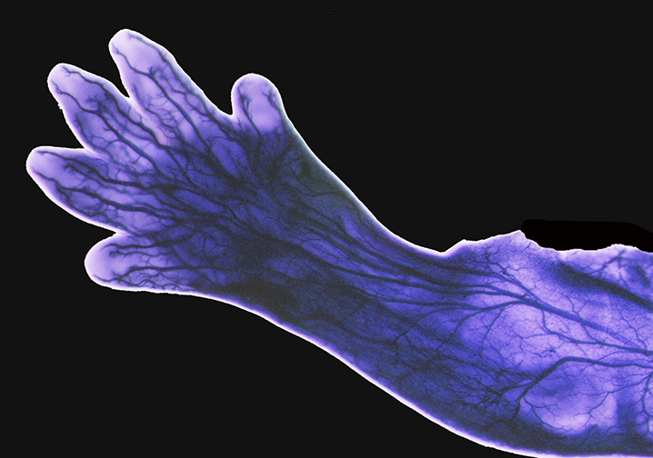
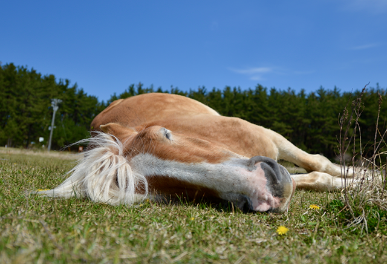
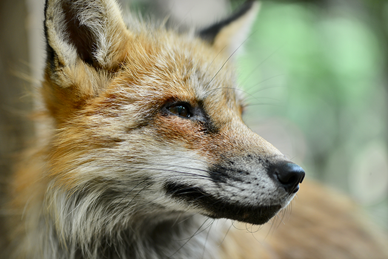

I'm currently working as a research scientist in one of the biggest government research institutes in Japan. My research interest is to understand nerve development. More specifically I study how sensory nerves are able to travel from the central nervous system to their targets in the periphery, such as the skin. A nerve cell, called a neuron, typically consists of a cell body, dendrites, and a long axon. The cell body is the command center where it contains most of the instruction of what the cell should do and produces most of the energy used by the cell. Dendrites are like receptors put out there to detect what is going on in the immediate environment and to receive messages from other neurons. Axons are often output devices. In the case of sensory neuorns connected to the skin, they are the ones that sense the temperature, texture, movement of everything we touch and also are responsible for pain sensation. They contain only the cell body which resides in spherical structures right beside the spinal cord and are called the dorsal root ganglions, and an axon that bifurcates - one side projecting to the skin and the other projecting to the spinal cord. In this case, the axon took on the functions of both receiver and output device - it both detects and sends the information back to the cell body. Sensory nerves (the skin-projecting side) are bundles of these axons coming out from the cell bodies which are contained inside the brain and travelling together towards the skin. I study how these axons find their way over such long distances.

This is an image of sensory nerves in a developing mouse embryo.
While working as a postdoctoral researcher, I do a lot of data analyses and come across cool softwares that are powerful and user-friendly. More importantly, I discover the usefulness and ubiquitousness of the open-source Python programming language. I was thinking, 'Oh my goodness! I can do some much with this!' So I start using it to analyze my research data and take on side projects for fun.
In addition to science, my interests are animals, horseback riding, snorkeling, (animal) photography. Here are a couple of my favorite photos:

